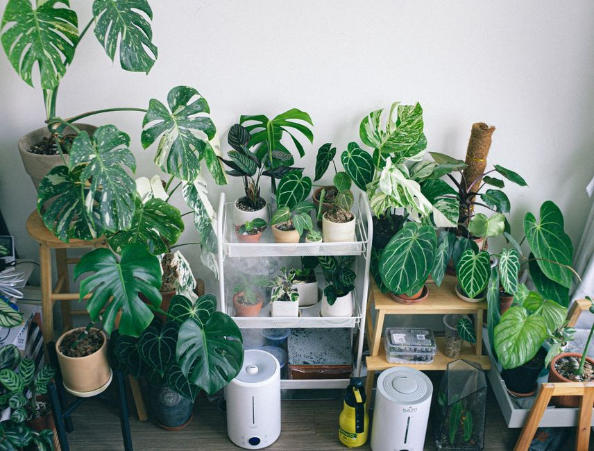

Tips for Maintaining Natural Humidity for Your Indoor Plants in Winter

Photo: Huy Phan / Pexels
Winter heating dries the air in most homes. Many houseplants cope well with dry air, but some, such as calathea and Boston fern, get crispy brown leaf tips. Here are simple ways to help without harming your plants.
Measure before you act
An inexpensive hygrometer shows the humidity in the room. Heated homes are often below 30%. Plants that like humidity do best around 40 to 60%; most common houseplants are fine at normal indoor levels.
Group your plants
Leaves release water vapor, so plants placed together create slightly more humid air around them. Leave a little space between them for airflow so mold does not develop.
Use a humidifier
This is the most effective method. Place it a few feet from the plants, clean it as the manufacturer directs and use the water type they recommend. Avoid aiming the mist at walls and furniture.
Try a pebble tray
Set the pot on pebbles in a saucer of water, making sure the bottom of the pot does not sit in the water. The effect is small and local, but it also protects the floor.
What helps little
Misting only raises humidity for a few minutes and can encourage leaf spots on some plants. A bottle of water next to a plant makes almost no difference.
Keep plants away from heat and drafts
Move plants away from radiators, heat vents and cold drafts near windows. Sudden temperature changes harm leaves more than dry air does.
Water less in winter
Plants grow more slowly in winter and use less water. Wait until the top of the soil is dry before watering again, and empty the saucer after watering.
A note for pet owners
Pothos, philodendron and peace lily are toxic to cats and dogs if chewed. Keep them out of reach, and call your vet or a pet poison hotline if your pet eats a plant.
Recommended products
As an Amazon Associate, I earn from qualifying purchases.